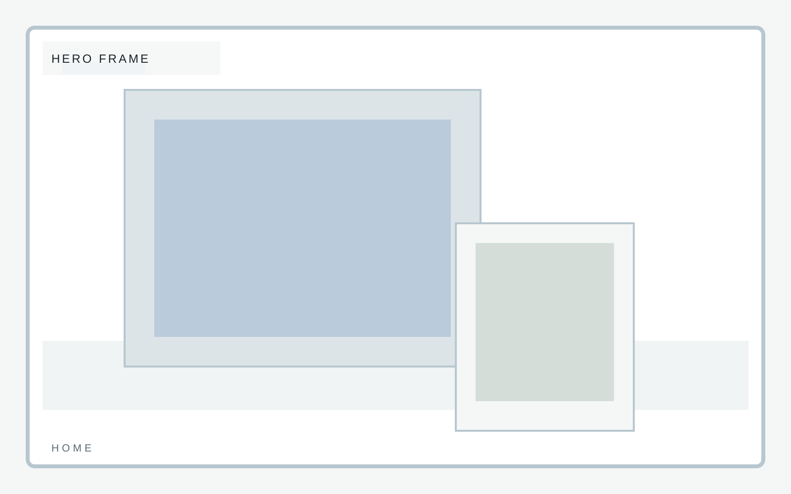
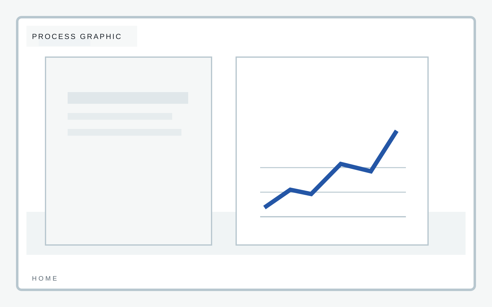

Launch pace
Ship inside two weeks
Fast-launch company site
A compact brochure template with disciplined spacing, clear positioning, and enough personality to avoid the usual interchangeable startup landing page. A launch brochure still needs a spine.

Fast-launch company site
This section should get to the point quickly and still feel designed. The right version reads like a capable company landing in public for the first time.

Fast-launch company site
Why us must establish confidence without exaggeration. Keep the language compact and the composition sharp.
Fast-launch company site
Process should make the team feel real and organized even when the business is early.
Fast-launch company site
Foundry uses contact to establish immediate credibility with clean pacing, strong hierarchy, and just enough personality to avoid sameness. This home page stays consistent with the template system while giving this section its own visual weight.